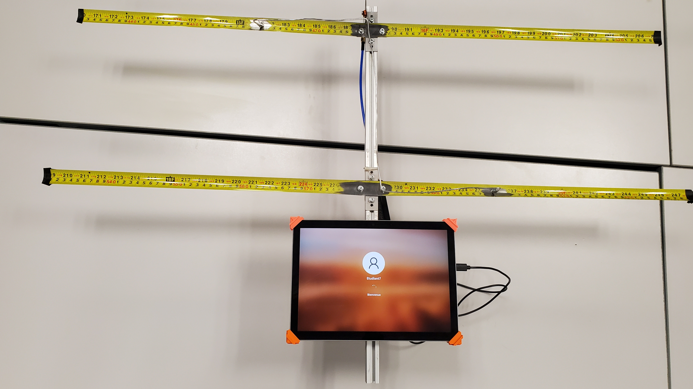

BUT GEII

Robot Mini-Sumo
Conception d'un robot autonome chargé de détecter et d'éjecter un adversaire d'un dohyo. Ma contribution au projet présente l'étude de la gestion d'énergie, de la sécurité batterie et de la logique de comportement par Grafcet.
Détails du projet
Projet Radiogoniométrie
Conception et étalonnage d'un système de réception radio directif pour la localisation de balises.
Détails du projet
Kart à hélices
Conception d'un kart miniature propulsé par une hélice et contrôlé par une télécommande.
Détails du projetDU Robotique Autonome

Robot Holonome Autonome
Conception d'un robot autonome capable de sortir d'un labyrinthe. Travail en équipe avec une spécialisation sur l'architecture logicielle et le traitement LiDAR.
Détails du projet